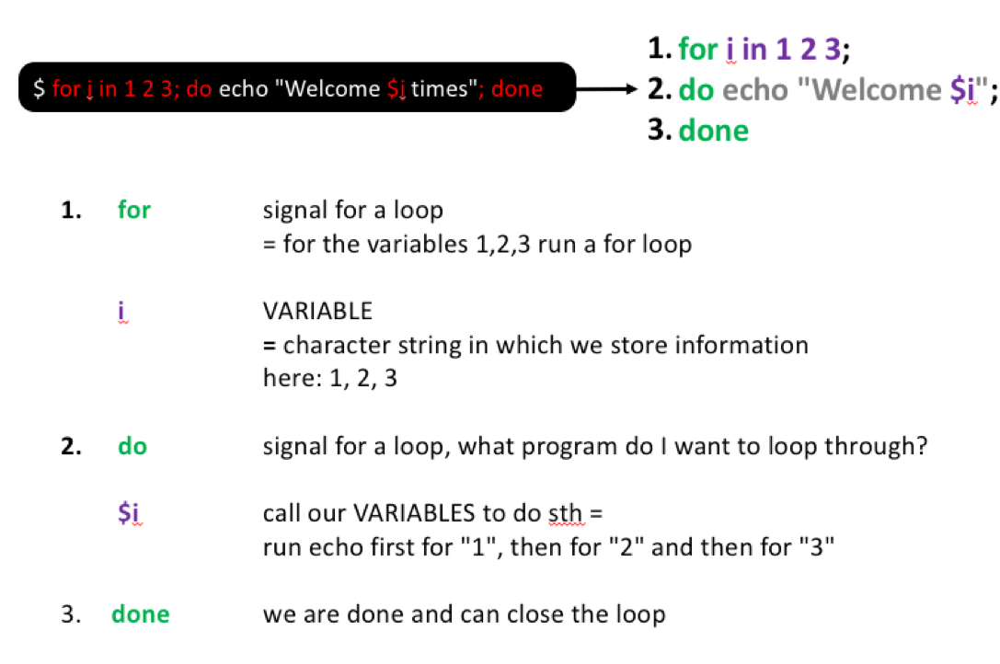
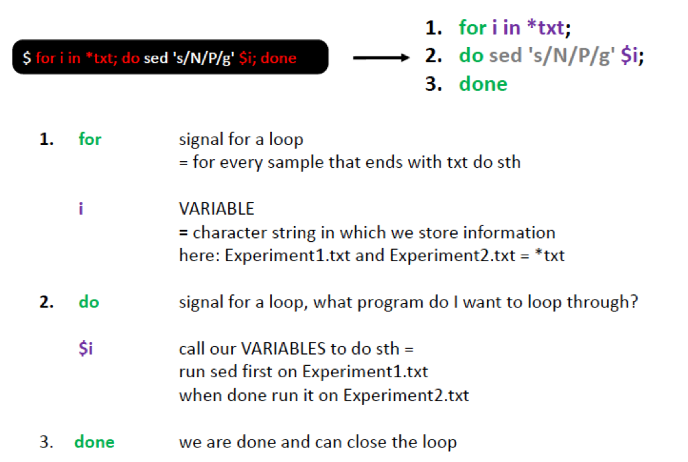
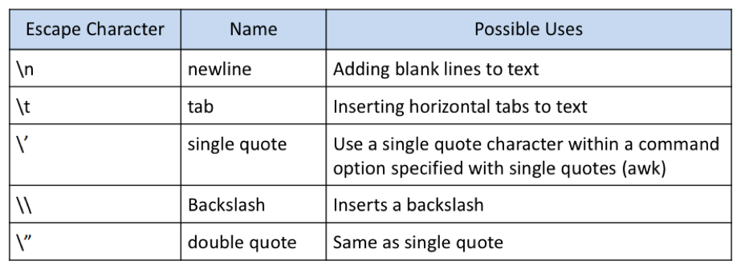

wget -P downloads https://raw.githubusercontent.com/ndombrowski/Unix_tutorial/main/Input_docs/Experiment1.txt
wget -P downloads https://raw.githubusercontent.com/ndombrowski/Unix_tutorial/main/Input_docs/Experiment2.txt
wget -P downloads https://raw.githubusercontent.com/ndombrowski/Unix_tutorial/main/Input_docs/Experiment3.txt
wget -P downloads https://raw.githubusercontent.com/ndombrowski/Unix_tutorial/main/Input_docs/PF00900.faa
wget -P downloads https://raw.githubusercontent.com/ndombrowski/Unix_tutorial/main/Input_docs/PF01015.faa
#check if this worked
ls downloads/Working with files in bash
Next, let’s go through some basic bash commands that are extremely useful when working with files. To this, let’s first download some example files to use.
Downloading example data
The content of the files is not important but what you downloaded are simple text files that contain information about a growth experiment and the files look something like this:
| Ex1 | control1 | 0.2 | 0.3 | #Ex1_all_good |
| Ex1 | control2 | 0.3 | 0.1 | #all_good |
| Ex1 | N[0.4uM] | 10.1 | 4.7 | #contamination |
| Ex1 | N[0.4uM] | 5.2 | 4.3 | #all_good |
The faa files are a file type you might encounter when working with molecular data. The FASTA format is a text-based format for representing either nucleotide sequences or amino acid (protein) sequences, in which nucleotides or amino acids are represented using single-letter codes. A sequence begins with a greater-than character (>) followed by a description of the sequence (all in a single line). The lines immediately following the description line are the sequence representation, with one letter per amino acid or nucleic acid, and are typically no more than 80 characters in length.
>GCA_000007185
MVRDKWKDKVWYTILAPDMFDNVEVGETPADDPEKVIGRVLETTLGDVLDDITKHHIKVFFRIYDVEGTTAYSKFEGHRLMRDYVRSLVRRGTSRIDGVIDVVTKDGYKVRVAGLAFTTRRAKTSQQRAIRKEMFKVIEENAKECDFDEFIRRCLSISEEESIPEQIKEAGRKIYPIRQAEIRKTEVLEEPNGLPPYEAVGDRATPELASY
>GCA_000007305
MAAKRATTTRDKWKLKQWYIIIn your case you will look at two protein fasta files in which the header contains the information from what genome, i.e. GCA_000007185, a sequence was extracted from as well as the actual sequence itself.
wc: Counting things
The wc (= wordcount) command in UNIX is a command line utility that:
- Can return the number of lines, the number of characters and the number of words in a file
- Can be combined with pipes for general counting operations. We will explain pipes a bit later
The following commands are simple but essential for quality control and you will use it a lot to check whether your commands worked all right.
#count how many words we have
wc -w downloads/Experiment1.txt
#count how many lines we have in a file we have
wc -l downloads/Experiment1.txtgrep: Finding patterns in files
The grep command is used to search text. It searches the given file for lines containing a match to the given strings or words. Also this command is simple but very useful for sanity checks after file transformations.
#count how often the pattern **control** occurs in our document
grep "control" downloads/Experiment1.txt
#only give the counts, not the lines
grep -c "control" downloads/Experiment1.txt
#grep a pattern only if it occurs at the beginning of a line
grep "^Ex" downloads/Experiment1.txt
#we can also count the number of sequences in the fasta file we downloaded before
grep -c ">" downloads/*faaUsing wildcards
Since the shell uses filenames so much, it provides special characters to help you rapidly specify groups of filenames.
A Wild-card character can be used as a substitute for any class of characters in a search.
- The
*wildcard is the wildcard with the broadest meaning of any of the wildcards, it can represent 0 characters, all single characters or any string of characters. I.e. we can grep for something in any files that end with .txt as follows:
grep -c "Ex" downloads/*txt- The
?wildcard matches exactly one character but will ingore files that start with a dot. We could use it as follows:
grep "control" downloads/Experiment?.txt- [012] wildcard = matches 0 or 1 or 2 exactly once
grep "control" downloads/Experiment[012].txt- [0-9] wildcard = matches matches any number exactly one
grep "control" downloads/Experiment[0-9].txt- combining wildcards
- [A-Z] wildcard = any letter in capitals occurring once
- [a-z]* wildcard = any letter in non-capital letters occurring many times
grep "control" downloads/[A-Z][a-z]*[12].txt- [a-z]{7} we are exactly looking for 7 letters (as in ‘control’)
- these 7 letters should be followed by either a 1 or 2
grep "[a-z]\{7\}[12]" downloads/Experiment[12].txt- if we are not sure how many characters we have
- matches 3-10 characters
grep "[a-z]\{3,10\}[12]" downloads/Experiment[12].txtIf you use grep with special symbols you might notice something:
#this does not work
grep "control?" downloads/Experiment1.txt
#this works how we want it to work
grep -E "control?" downloads/Experiment1.txt-Etells grep that the ‘?’ is not taken literally but as a wildcard
Unfortunately different programs have slightly ways to do things, i.e greop uses -E while sed uses different quotes. If you run into problems when using wildcards check the manual or the web.
Exercise
- In the faa files, how many sequences do we have? Notice, sequences always start with a
> - In the faa files, how often do we have 3 consecutive A’s?
- In the faa files, how often do we have 2x A’s followed by a T?
- In the faa files, how often do we have 2x M’s followed by a T or followed by a D?
Comment: If you unsure what is happening remove the -c to see what grep is grepping.
Show the code
#question1:
grep -c ">" downloads/*.faa
#question2
grep -c "[A]\{3\}" downloads/*.faa
#question4
grep -c "[A]\{2\}[T]" downloads/*.faa
#question5
grep -c "[A]\{2\}[TC]" downloads/*.faaHint: if you are unsure what is happening, redo the command without the -c option
cat: Combining data
The cat command has three main functions related to manipulating text files:
- Create a new file using cat. To do this type the command below, then type
Hello!press enter, and *Press “ctrl+c” to save the file:
cat > downloads/file_test.txt- Display the content of an existing file:
cat downloads/file_test.txt- Concatenate, i.e. combine, several files:
#merge files
cat downloads/file_test.txt downloads/file_test.txt > downloads/file_merged.txt
#check the content of the file
cat downloads/file_merged.txtExercise
- View the content of downloads/Experiment1.txt by using cat
- Combine downloads/Experiment1.txt and downloads/Experiment2.txt.
- Do the same as above but use a wildcard to not have to type everything and store the output as
downloads/Experiments.txt
Show the code
#question1
cat downloads/Experiment1.txt
#question3
cat downloads/Experiment1.txt downloads/Experiment2.txt
#question3
cat downloads/Experiment*.txt > downloads/Experiments.txtPipes (|): Combining commands
Pipes are a powerful utility to connect multiple commands together. They allow us to feed the standard output of one command as input into another command.
In the example below we first combine two files using cat and use wc -l on the standard output to count the number of lines after concatenating the two files:
cat downloads/Experiment[12].txt | wc -lExercise
- Using a pipe, combine the two faa files and count the total number of sequences using grep:
Show the code
#question1
cat downloads/*faa | grep -c ">"cut: extracting sections from tables
We can use cut to separate columns. By default cut uses a tab as a delimiter. We could print the first column of our data as follows:
cut -f1 downloads/Experiment1.txtOr if we only want to get the second column we do this:
cut -f2 downloads/Experiment1.txtIf we wanted to get columns 1 and 2 we do:
cut -f1-2 downloads/Experiment1.txtWe can also change how we cut, i.e. we could cut after a # by using the -d argument:
cut -f1 -d "#" downloads/Experiment1.txtExercise
- In PF00900.faa, we want to shorten the fasta header. To do this cut the text of after the first underscore
_(i.e. keep only the first element). Combine this with the head command to only view the first few lines and see if your command worked. - In PF00900.faa, cut to only keep the text after the first
_(i.e. keep the second element). Again, combine this with the head command.
Show the code
#question1
cut -f1 -d "_" downloads/PF00900.faa | head
#question2
cut -f2 -d "_" downloads/PF00900.faa | headBe careful when using the second options, as this will cut away the > symbol that we need in fasta files to define the header. I.e. fasta headers always should start with this symbol and if we would use such a command we would need the > back in/
sort: Sorting files
sort – sort lines in a file from A-Z and is useful for file organization. We can sort files like this:
sort downloads/Experiment2.txtSort by default sorts from left to right, but we also can sort based on a specific column, for example column 4:
sort -k4 downloads/Experiment2.txtWe can also sort by more than one column, i.e. column 5 followed by column 3:
sort -k5 -k3 downloads/Experiment1.txtuniq: Finding duplicated data
uniq – can be used to remove or find duplicates . However, for this to work the file first needs to be sorted. To do this, we can make use of pipes. Lets, start of by extracting the observations we made with cut:
cut -f5 downloads/Experiment1.txtWe then can sort the column by adding a pipe:
cut -f5 downloads/Experiment1.txt | sortAnd only print unique observations with uniq:
cut -f5 downloads/Experiment1.txt | sort | uniqIf we where interested in duplicated observations, we can add the -d argument:
cut -f5 downloads/Experiment1.txt | sort | uniq -dCheck out the manual for more options!
Exercise
- Using a pipe: combine the faa files. How many sequences do we have in total?
- Using a pipe: combine the faa files. Extract only the header and then count how many duplicates do we have?
- Same as above, but how many sequences are not duplicated? Check the manual for uniq on what option allows you to do this.
Show the code
#question1
cat downloads/*faa | grep -c ">"
#question 2
cat downloads/*faa | grep ">" | sort | uniq -d | wc -l
#question 3
cat downloads/*faa | grep ">" | sort | uniq -u | wc -l find: Locate files based on conditions
find searches through the directories for files and directories with a given name, date, size, or any other attribute you care to specify.
#find all files with a txt extension
find downloads/ -name "*txt"
#find files over a certain size and display results as a long list
find downloads/ -size +1M -lssed: Manipulating the content of files
Sed is a stream editor that can be used to perform basic text transformations on an input stream (a file or input from a pipeline).
The most basic pattern to use sed for is sed ‘s/find/replace/’ file.
Basics: Search and replace
Let’s go back to our text files and assume that instead of writing Ex we want to be more clear and write Experiment, we can do this as follows:
sed 's/Ex/Experiment/' downloads/Experiment1.txt When doing this, we see that:
- Ex only gets replaced the first time it appears in a line, ie. the #Ex1_all_good in the first line gets not replaced
- sed will not overwrite the input file (unless you tell it to do so) but it will print the changed to the screen. If we wanted to save this in a file, we would need to re-direct the output to a new file.
To change all instances of Ex, we can do the following:
sed 's/Ex/Experiment/g' downloads/Experiment1.txt Sed can be easily used with wildcards. For example, if you would want to replace control1 and control2 just with control you could do:
sed 's/control[0-9]/control/g' downloads/Experiment1.txt One important thing to remember is that certain symbols have specific meanings in UNIX. Examples are: comma, brackets, pipes. Do search for these in files, we need to escape them with a \. For example, we could replace the square with round brackets as follows:
#replace the square bracket with a round bracket.
sed 's/N\[0.4uM\]/N(0.4uM)/g' downloads/Experiment1.txt Exercise
- In downloads/PF00900.faa , replace the GCA_ with Genome_
- In downloads/PF00900.faa , use wildcards to replace the string of numbers after the GCA with a
hello
Show the code
#qst 1
sed 's/GCA_/Genome_/g' downloads/PF00900.faa
#qst 2
sed 's/GCA_[0-9]*/GCA_hello/g' downloads/PF00900.faa Removing things (and using WILDCARDs)
Sed can also be used to remove things, such as line(s) or patterns. Below is a list of examples that you might encounter or find useful.
# remove 1 first line
sed '1d' downloads/Experiment1.txt
#remove last line
sed '$d' downloads/Experiment1.txt
#remove lines 2-4
sed '2,4d' downloads/Experiment1.txt
#remove lines other than 2-4
sed '2,4!d' downloads/Experiment1.txt
#remove the first and last line
sed '1d;$d' downloads/Experiment1.txt
#remove lines beginning with an **L**
sed '/^L/d' downloads/Experiment1.txt
#delete lines ending with d
sed '/d$/d' downloads/Experiment1.txt
#delete lines ending with d OR D
sed '/[dD]$/d' downloads/Experiment1.txt
#delete blank lines ('^$' indicates lines containing nothing, i.e. lines with zero or more spaces)
sed '/^$/d' downloads/Experiment1.txt
#delete lines that start with capital letters
sed '/^[A-Z]/d' downloads/Experiment1.txt
#delete lines with the pattern **Ex**
sed '/Ex/d' downloads/Experiment1.txt
#delete files with the pattern control or uM
sed '/control\|uM/d' downloads/Experiment1.txt
#delete the 2nd occurence of each pattern per line (here *o*)
sed 's/o//2' downloads/Experiment1.txt
#remove all digits across the whole file
sed 's/[0-9]//g' downloads/Experiment1.txt
#remove all alpha-numerical characters and numbers
sed 's/[a-zA-Z0-9]//g' downloads/Experiment1.txt
#remove character, here E, regardless of the case
sed 's/[eE]//g' downloads/Experiment1.txtscreen: Running things in the background
Screen or GNU Screen is a terminal multiplexer. This means that you can start a screen session and then open any number of windows (virtual terminals) inside that session.
Processes running in Screen will continue to run when their window is not visible even if you get disconnected. This is perfect, if we start longer running processes on the server and want to shut down our computer when leaving for the day. As long as the server is still connected to the internet, your process will continue running.
We start a screen as follows:
screenWe detach, i.e. exit, from a screen with control+a+d.
If you run multiple things, it can be useful to give your screens more descriptive names. You can do this as follows:
#start a screen and give it a name
screen -S testrunAfter detaching from a screen you can list all currently running screens with:
screen -lsYou can restart a screen like this:
#restart an existing screen
screen -r testrunIf you want to completely close and remove a screen, type the following while being inside of the screen:
exitloops: Running the same thing over and over again
echo/printf
Before talking about loops, lets learn another command first, echo. echo displays a line of text that can be printed to the screen or stored in a file (why this is useful you see in a second):
Both echo and printf print something into the console. However, echo uses different versions across shells, so you might get slighly different outputs depending on the shell you use. Printf is more portable and allows for more formatting options. You might encounter both when finding code in the wild.
#print a string to the console using echo
echo "Hello everyone"
#print a string to the console using printf
printf "Hello everyone"For-loops
A for loop is a bash programming language statement which allows code to be repeatedly executed. I.e. it allows us to run a command 2, 3, 5 or 100 times.
Try running this example in which we want to say hello several times:
for i in 1 2 3; do echo "Welcome $i times"; doneHere, you see what this command does step by step:

We could also use a loop to run sed on all our txt files. For example assume that instead of nitrogen (N) we measured sulfur (s) we could replace it among all text files as follows:
#change the N for P in all our files
for i in downloads/*txt; do sed 's/N/S/g' $i; done

If we want to store the output in new files, we could store them with a slightly different name as follows:
for i in downloads/*txt; do sed 's/N/S/g' $i > ${i}_2.txt; done
#check that all went alright with
ll downloads/*txtYou see here, that we added curly brackets to define the borders of our variable i. I.e. if we would not have the brackets unix would look for a variable i_2, which does not exist.
You will also see that the name of the output file is not ideal, i.e. it is something like downloads/Experiment3.txt_2.txt. To get more control over the name of the output files we can use a file list for building the loop.
To do this let’s use printf to generate a FileList in which list the the two files we want to work with: Experiment1 and Experiment2. We do this using printf and \n, which is a special character we can use to separate Experiment1 and Experiment using a new line.
printf "Experiment1\nExperiment2" > downloads/FileList
#view file
head downloads/FileListNow we can use this file to run our loop.
for i in `cat downloads/FileList`; do sed 's/N/S/g' downloads/${i}.txt > downloads/${i}_2.txt; done
#check that all went alright with
ll downloads/*txtNotice, that using this option we need to add the file extension! However, the resulting filenames, i.e. downloads/Experiment2_2.txt, are much cleaner.
Exercise
- Make a list with all the faa files (do this with the command line). Ideally, we want to have PF00900 and PF01015 in one column. For this you want to list the names of all faa files but at the same time remove the file extension and the folder name.
- Use this list to, in a loop, replace the GCA_ with Genome_. Store the files with the new ending
renamed.faa
Show the code
#question1
ls downloads/*faa | sed 's/downloads\///g' | sed 's/\.faa//g' > downloads/FaaList
#question2
for sample in `cat downloads/FaaList`; do sed 's/GCA_/Genome_/g' downloads/${sample}.faa > downloads/${sample}_renamed.faa; done
#check file
head downloads/PF00900_renamed.faaVariables
A variable is a character string to which we assign a value. Environment variables are variables that are set up in your shell when you log in. They are called “environment variables” because most of them affect the way your Unix shell works for you. I.e. one points to your home directory and another to your history file.
One common environmental variable is $HOME. This variable holds the path to your home directory, which is like your computer’s main hub.
We can use the echo command to display the value of a variable. Let’s use it to look at an environmental variable found on most systems called $HOME:
echo $HOMEYou can use this variables in commands, for example you can use it together with cd to move into your home directory:
cd $homeYou can easily make your own variables and use them to store file name, paths or what ever you want. Let’s store a number in a variable:
MY_NUMBER=10When using the export command this lets the system know that this variable is for everyone, not just the current session.
Lets see if this worked:
echo "My math number: $MY_NUMBER"Once you have this, you can use it for any command that you want.
Accesss rights
Each file (and directory) has associated access rights, which may be found by typing ls -l. Additionally, ls -lg gives additional information as to which group owns the file
ls -lg downloads/Experiment1.txt -rw-r--r-- 1 staff 156B Sep 28 2019 downloads/Experiment1.txt
In the left-hand column is a 10 symbol string consisting of the symbols d, r, w, x, -, and, occasionally, s or S. If d is present, it will be at the left hand end of the string, and indicates a directory: otherwise - will be the starting symbol of the string.
The 9 remaining symbols indicate the permissions, or access rights, and are taken as three groups of 3.
- The left group of 3 gives the file permissions for the user that owns the file (or directory)
- the middle group gives the permissions for the group of people to whom the file (or directory)
- the rightmost group gives the permissions for all others.
The symbols r, w, etc., have slightly different meanings depending on whether they refer to a simple file or to a directory.
Access rights for files
- r (or -), indicates read permission (or otherwise), that is, the presence or absence of permission to read and copy the file
- w (or -), indicates write permission (or otherwise), that is, the permission (or otherwise) to change a file
- x (or -), indicates execution permission (or otherwise), that is, the permission to execute a file, where appropriate
Access rights for directories
- r allows users to list files in the directory;
- w means that users may delete files from the directory or move files into it;
- x means the right to access files in the directory. This implies that you may read files in the directory provided you have read permission on the individual files.
So, in order to read a file, you must have execute permission on the directory containing that file, and hence on any directory containing that directory as a subdirectory, and so on, up the tree.
Changing access rights
We can use chmod to change who has access to our files.
Chmod options:
u = user
g = group
o = other
a = all
r = read
w = write (and delete)
x = execute (and access directory)
+ = add permission
- = take away permission
For example, to add read write and execute permissions on the file example.txt for the group (i.e g), type:
chmod g=rwx example.txt To remove read write and execute permissions on the file example.txt for the group and others (i.e go), type:
chmod go-rwx example.txt Random but useful
The code below is a random collection of code the author found useful. This means it might be interesting for you BUT these are so far not linked to example files and some programs might not be avail. on your system by default.
Escaping characters
Certain characters are significant to the shell; Escaping is a method of quoting single characters. The escape (\) preceding a character tells the shell to interpret that character literally. Below, we find the special meanings of certain escaped characters:

Excel/DOS to UNIX issue cleanup
- hidden symbols
Sometimes when saving excel documents as text this insert hidden symbols. These can be seen as a blue M when opening the file in vim (sometimes they result in odd errors while parsing tables). Most often you see these issues when you open your files and lines are merged that should not be merged.
This symbol can be removed as follows in vim:
:%s/\r/\r/g to remove blue M- wrong file types
Files created on WINDOWS systems are not always compatible with UNIX. In case there is an issue it is always safer to convert. You see if you have an issue if you open your file of interest with nano and check the file format at the bottom.
If we see we are dealing with a dos file, we can clean files like this:
#dos to unix
awk '{ sub("\r$", ""); print }' winfile.txt > unixfile.txt
#unix to dos
awk 'sub("$", "\r")' unixfile.txt > winfile.txtdatamash: merging rows by keys
GNU datamash is a command-line program which performs basic numeric, textual and statistical operations on input textual data files.
datamash -sW -g1 collapse 2 collapse 4 < Unimarkers_KO_count_table.txt > Unimarkers_KO_collapsed.txtDealing with PDFs –> CPDF
CPDF is a useful program if you want to merge pdfs, remodel them all to A4 etc.
This is not available on the server but easy to install in case you are interested.
For more information, see here
# merge pdfs
~/Desktop/Programs/cpdf-binaries-master/OSX-Intel/cpdf -merge *pdf -o All_Main_Figs.pdf
#convert to A4
~/Desktop/Programs/cpdf-binaries-master/OSX-Intel/cpdf -scale-to-fit a4portrait SI_Figures.pdf -o test.pdf